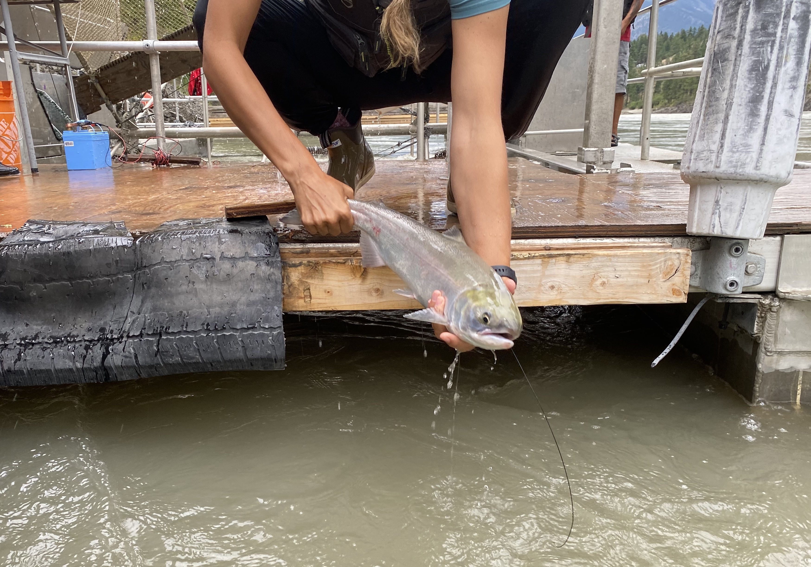
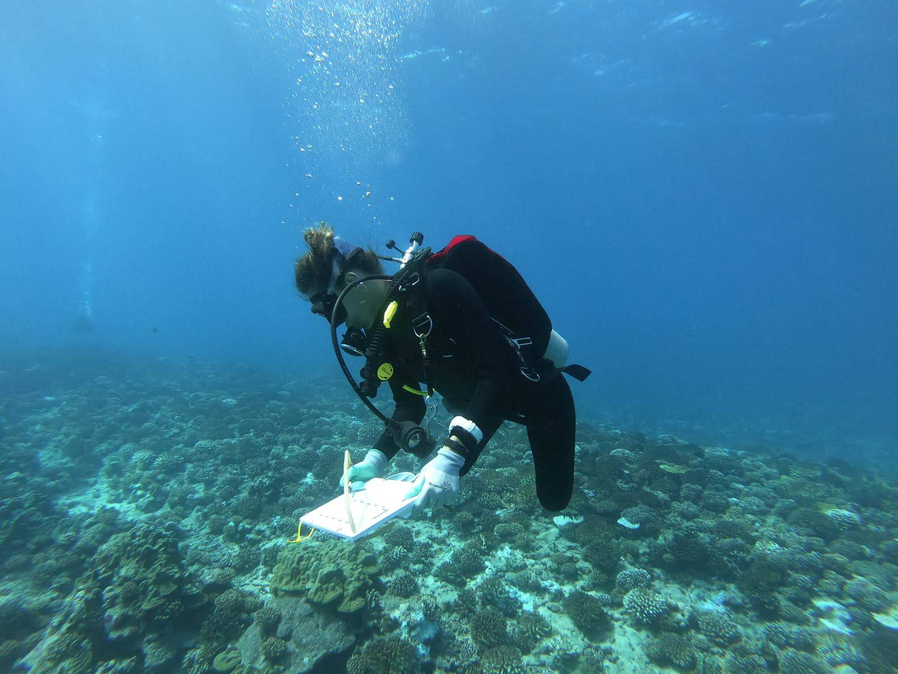

research
I study how fish survive in their surroundings to better understand these important animals under changing climate.
Pacific Salmon
In short, I assess the vulnerability of various species of Pacific salmon to changing river conditions (warm waters, various flow rates) to protect and conserve this threatened taxa. In collaboration with various stakeholders, I use a variety of techniques including blood physiology, enzyme and metabolite metrics, histology, respirometry, and tagging and tracking.
Sockeye salmon radio-tagged on the Fraser River. PC: Kim Birnie-Gauvin
Coral reef fish
On the other side of the equator and in very different clothing, I work with coral reef fish. Coral reef ecosystems are facing extreme temperatures. Corals and reef fish are both particularly near the edge of their thermal limits, threatening the health of coral reef ecosystems. The goal of these studies are to better understand the importance of fish in coral reefs and their plastic responses to marine heatwaves. I use nutrient analyses, respirometry, behavioral surveys, and cardiac thermal tolerance tests.

Observing fish on the forereef in Moorea, French Polynesia.
Fisheries
In summer 2023, I was awarded funding by NSF to work with NOAA Pacific Islands Fisheries Science Center (PIFSC) to assess the effect of effort displacement due to economic exclusion zones on the by-catch of protected species. Leveraging machine learning, we are working with longterm fisheries data to investigate these impacts. My postdoctoral position works with [Dr. Zach Siders](https://www.zachsiders.com/) at the University of Florida in collaboration with PIFSC to continue this work.

Fishing vessel. PC: Ocean Image Bank, Nicolas Jab